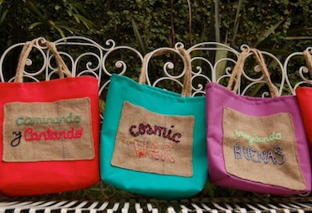
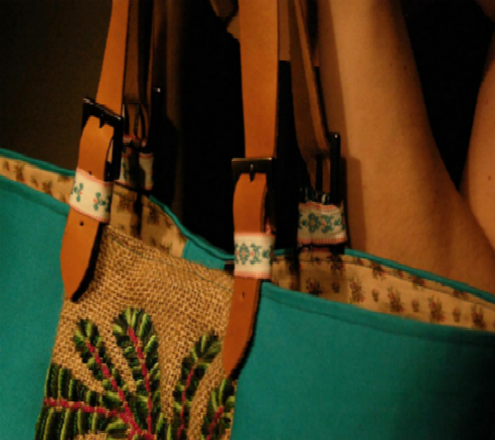
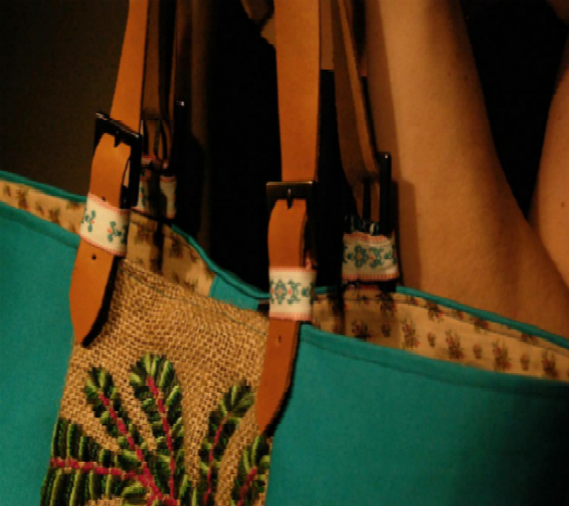

-
Luminarias
Estructura en hierro y wrapping en lana.Medidas aprox. 40cm x 45cm.


Estructura en hierro y wrapping en lana.Medidas aprox. 40cm x 45cm.
Materiales:lona,yute y arpillera
Morral Rayito de Sol.Materiales: Arpillera,bordado a mano en lana.

Materiales: paño de lana y cuero vacuno bordado en lana e hilo.
Bordado a mano sobre arpillera.Interior: popelina beige con mini florcitas.

Bolso Tote "Esqueleto"Bordado a mano en lana.Materiales: lona y arpillera.Asas en cuero vacuno.
 

Exterior: lino y arpillera.Asas: cuero vacuno.Pieza artesanal.
Bordado a mano en lana.Materiales: arpillera, asas de cuero vacuno.
Nuestras piezas son el resultado de la reutilización de ciertas telas nobles, más el empleo del bordado a mano; convirtiéndose en accesorios de lujo. Nuestra inspiración: la flora típica de los montes nativos. Uno de los objetivos es lograr una sustentabilidad en el diseño y que no haya desperdicios innecesarios. Caraguatá se reinventa incesante y se dedica a aquellas personas que aprecian los materiales perdurables y el detalle minucioso.